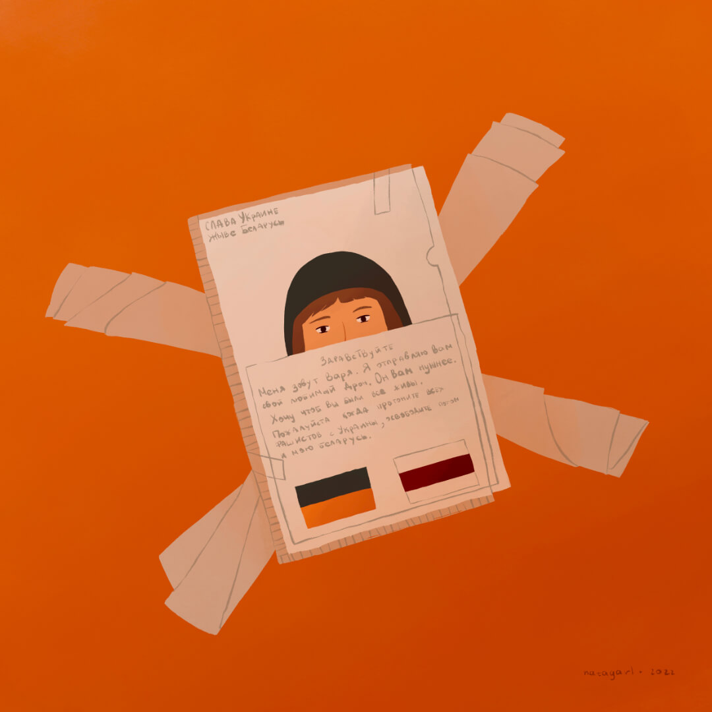

Што робяць беларусы падчас вайны на Украiне?
Аддаюць свае дроны, нават калі самі доўга на іх збіралі.
Яшчэ многа чаго добрага, але я гэтага яшчэ не намалявала.
Больш пачытаць пра справы беларусаў можна, напрыклад, тут:
tsikhanouskaya.orgАддаюць свае дроны, нават калі самі доўга на іх збіралі.
Яшчэ многа чаго добрага, але я гэтага яшчэ не намалявала.
Больш пачытаць пра справы беларусаў можна, напрыклад, тут:
tsikhanouskaya.org